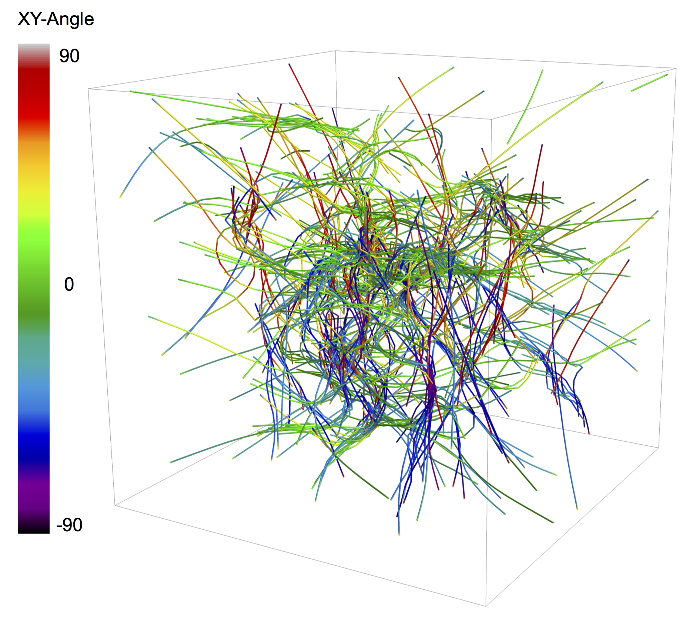

MEDYAN Simulation Gallery
This page contains various images and videos from MEDYAN simulation output. Descriptions of each image or video is accompanied by a reference to that publication, which are tracked on the page's publication list. Google Chrome and Safari are recommended to view this media.
Images
A 3 um x 3 um x 3 um actomyosin network snapshot. Actin filaments are colored in red, and myosin II motors and cross-linking proteins are colored in blue and green, respectively. From [1].

{kind=link}
The same snapshot as above, with filament segments colored by their angle with respect to the XY plane. Unipolar domains form simulataneously with contraction. From [1].
Videos
Shows a bundle of actin filaments protruding against a piece of membrane. The bundle with 4 actin filaments fail to form a tulular protrusion, while the bundle with 7 actin filaments form the protrusion. From [10].
A 1 um x 1 um x 1 um actomyosin network trajectory over 2000 s of network evolution. Actin filaments are colored in red, and myosin II motors and cross-linking proteins are colored in blue and green, respectively. From [1].
The same trajectory as above, with filament plus ends marked by black beads. Unipolar ordering forms simulataneously with contraction. From [1].